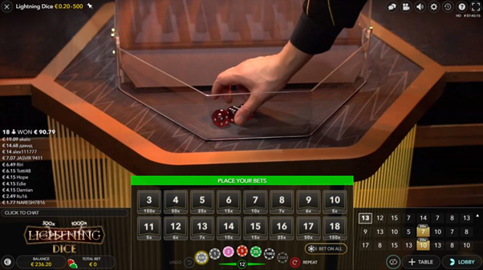
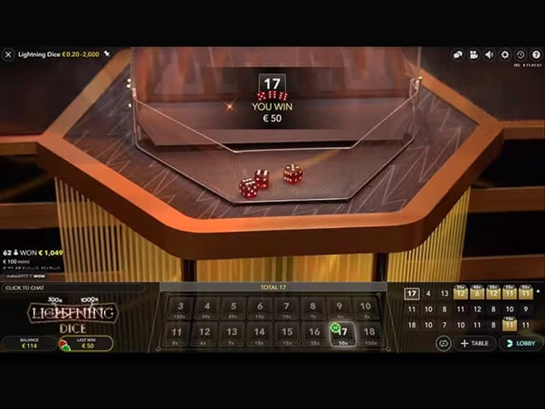
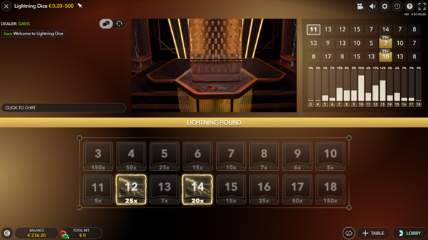
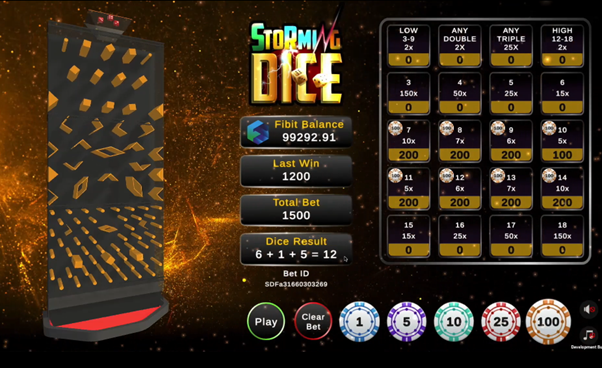

Chi tiết cách chơi Lightning Dice đơn giản tại KTO
Lightning Dice là một trong những trò chơi hấp dẫn nhất nhà cái uy tín KTO. Trò chơi với lối chơi đơn giản, đồ họa đẹp mắt không chỉ mang đến những giây phút giải trí thư giãn cho game thủ, mà còn tạo cơ hội để họ giành được những phần thưởng vô cùng hấp dẫn. Qua bài viết sau, hãy cùng KTO khám phá cách chơi Lightning Dice siêu đơn giản, giúp bạn dễ dàng chinh phục mọi ván cược khó nhằn, đừng bỏ lỡ nhé!
Lightning Dice Là Gì?
Lightning Dice là một trò chơi xúc xắc có cách chơi đơn giản nhưng mang tính giải trí cao, đáp ứng được những người chơi tìm kiếm trải nghiệm cá cược trực tuyến. Nó mang đến không gian sang trọng, đầy sức hấp dẫn của sòng bài trực tiếp đến với người chơi thông qua đồ họa trên máy tính và điện thoại sống động.
Trò chơi có Giao diện người dùng đầy bắt mắt với phong cách thiết kế nghệ thuật Art Deco màu đen và vàng tuyệt đẹp. Đồng thời Lightning Dice cũng đem tới mức trả thưởng có hệ số nhân ngẫu nhiên lên tới 1000 lần. Đặc biệt tại thế giới live casino KTO, bạn sẽ còn nhận được vô vàn ưu đãi khác nhau. Hãy cùng khám phá ngay!
Cách Chơi Trò Chơi Lightning Dice
Trò chơi được bắt đầu chơi với việc tung ba viên xúc xắc có các mặt từ 1 – 6 . Mục tiêu là người chơi phải dự đoán tổng số điểm của cả ba viên xúc xắc. Tổng điểm tối thiểu là 3 và tối đa là 18. Bạn có thể đặt cược vào bất kỳ vị trí nào có nhãn từ 3 đến 18 tùy theo phân tích của bản thân.

Cách Chơi Trò Chơi Lightning Dice
Bạn cũng có thể đặt cược vào tất cả 16 điểm đặt cược cùng một lúc bằng nút “BET ON ALL”.
Sau khi hết thời gian đặt cược, nhà cái bắt đầu tung xúc xắc xuống “lightning tower”. Khi xúc xắc dừng lại, các con số sẽ hiển thị và người chia bài sẽ thông báo tổng số tiền . Nếu bạn dự đoán chính xác tổng số tiền thì bạn là người chiến thắng.

Sau khi hết thời gian đặt cược, nhà cái bắt đầu tung xúc xắc xuống
Tiền thắng được trả dựa trên hệ số nhân. Mỗi điểm từ 3-18 sẽ tương ứng với những hệ số nhân khác nhau dựa trên xác suất thực tế mà chúng có thể xảy ra. Nhưng điều đáng chú ý là các mốc trả thưởng có thể được nhân lên tới 1000 lần, giúp bạn đạt được một khoản tiền hậu hĩnh. Khi xúc xắc rơi xuống, tia sét sẽ đánh vào giữa một và nhiều “Lightning Numbers” ngẫu nhiên trên lưới cá cược để quyết định hệ số nhân.
Nếu cược của bạn bị sét đánh, đồng thời bạn đoán đúng và bạn thắng, thì bạn có thể nhận được khoản thanh toán gấp rất nhiều lần số tiền đặt cược ban đầu của mình!

Nếu cược của bạn bị sét đánh
Bảng thanh toán tiêu chuẩn của Lightning Dice như sau:
- 3 thì nhân 150x.
- 4 thì nhân 50x.
- 5 thì nhân 25x.
- 6 thì nhân 15x.
- 7 thì nhân 10x.
- 8 thì nhân 7x.
- 9 thì nhân 6x.
- 10 thì nhân 5x.
- 11 thì nhân 5x.
- 12 thì nhân 6x.
- 13 thì nhân 7x.
- 14 thì nhân 10x.
- 15 thì nhân 15x.
- 16 thì nhân 25x.
- 17 thì nhân 50x.
- 18 thì nhân 150x.

Bảng thanh toán tiêu chuẩn của Lightning Dice như sau
Đặt cược Roulette kiểu Mỹ ô biên
Ví dụ: bạn đặt cược 100 đô vào số 7. Vì khoản thanh toán tương ứng là 10 lần nên khoản thanh toán của bạn là 100 x 7 = 700 đô.
Chiến lược & thủ thuật chơi cần biết
Một trong những chiến lược tốt nhất là đặt cược vào những kết quả có thể xảy ra nhất tức là có xác suất cao. Những điểm đó thường nằm ở vị trí giữa như 10 và 11 có xác suất 12,5%, tiếp theo là 9 và 13 với 11,6%.
Bạn cũng có thể đặt cược vào kết quả mà sòng bạc có lợi thế thấp hơn, khi xét đến các khoản thanh toán, tức là số nào mà nhà cái phải trả lớn nếu thắng. Sòng bạc có tỷ lệ ký quỹ thấp hơn ở số 9 và 12, tiếp theo là số 8 và 13. Hy vọng rằng những chia sẻ về cách chơi Lightning Dice của KTO trên đây sẽ giúp bạn thành công trong trò chơi của mình! Khám phá thêm nhiều bí kíp tại KTO blog!